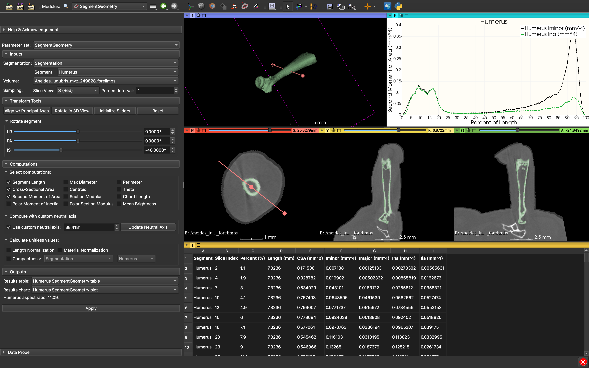
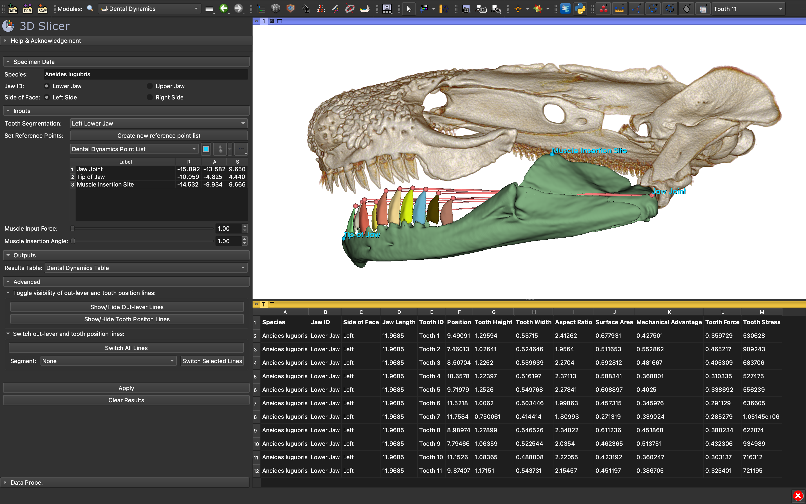

SlicerBiomech
SlicerBiomech is a python-based extension for the open-source bio-imaging platform, 3D Slicer. SlicerBiomech is a collection of modules or tools that help facilitate collection and modeling of biomechanical data from computed tomography (CT) datasets. Currently, there are two main modules. 1) Segment Geometry which iterates slice-by-slice through a structure and calculates different cross-sectional metrics (i.e., cross-sectional area or second moment of area). 2) Dental Dynamics which helps with the collection functional tooth data and modeling bite mechanics assuming a simple lever system. More modules are being worked on my collaborators, including one to calculate 3D fractal dimensions.
More information about SlicerBiomech, how to install it, step-by-step tutorials, and example videos can be found on the GitHub repository. I regularly answer questions about troubleshooting and fixing glitches on the 3D Slicer Discourse Page. or via email. If you need help or have ideas for improvement please reach out.
Relevant publications:
- Cohen KE, Fitzpatrick AR, Huie JM. 2024. Dental Dynamics: A fast new tool for quantifying tooth and jaw biomechanics in 3D Slicer. Integrative Organismal Biology, 6(1): obae015. doi.org/10.1093/iob/obae015
- Huie JM, Summers AP, Kawano SM. 2022. SegmentGeometry: a tool for measuring second moment of area in 3D Slicer. Integrative Organismal Biology, 4(1): 1-10. doi.org/10.1093/iob/obac009

